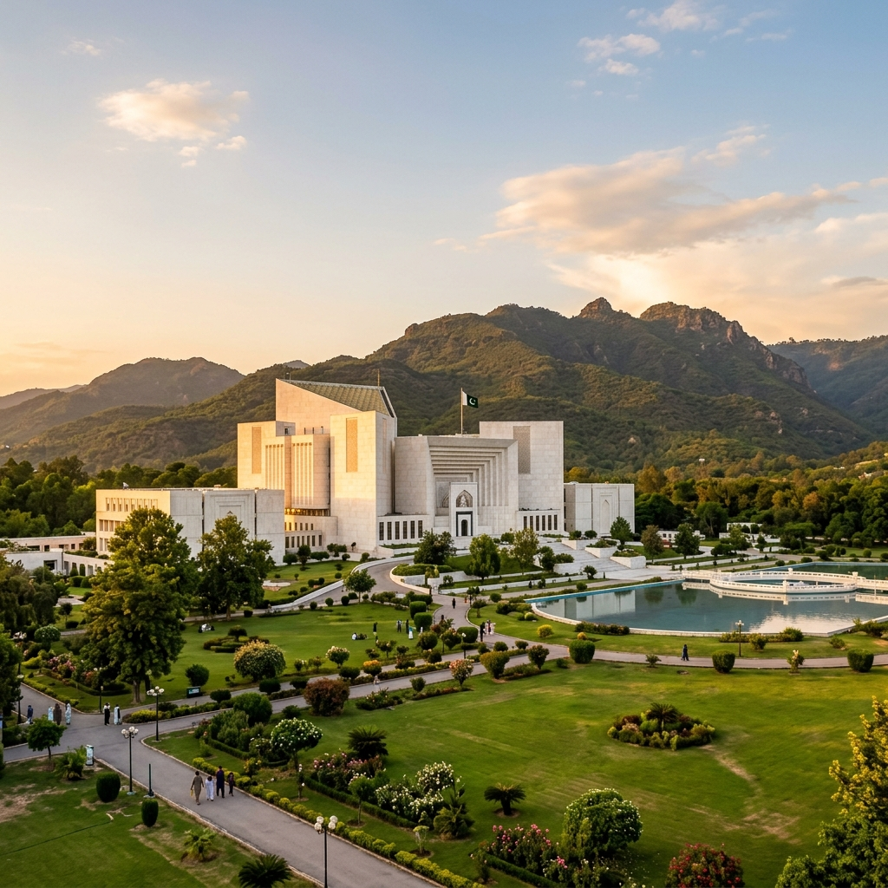
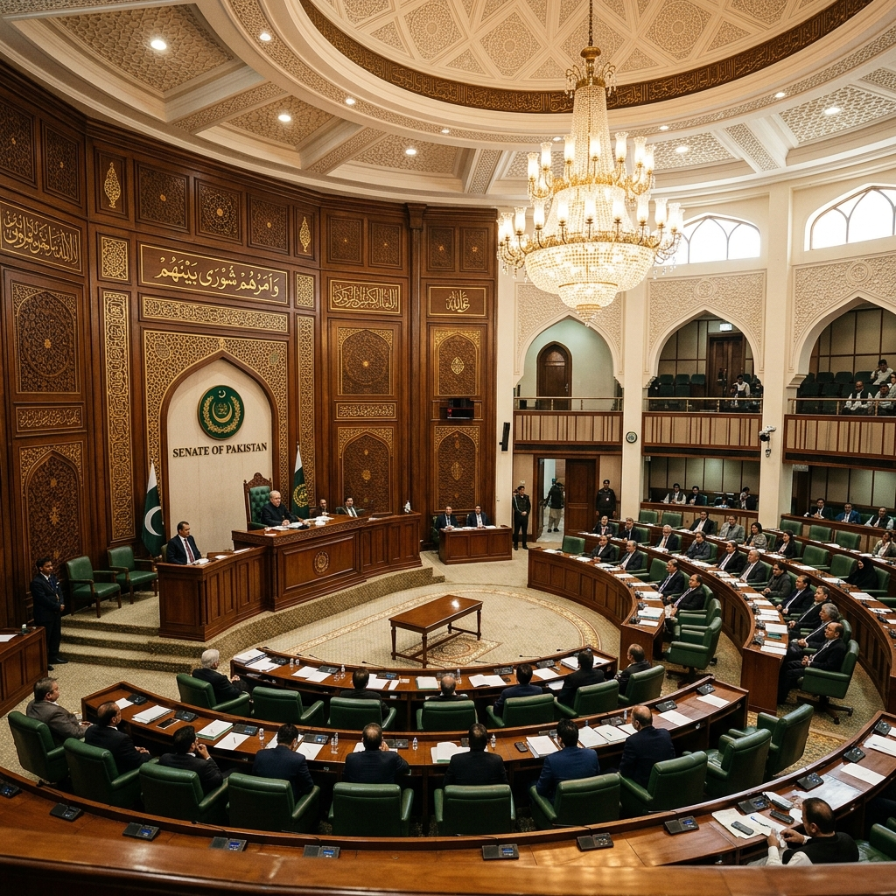

Parliamentary System
of Pakistan
Structure, Working Mechanisms, and Challenges (Through 2026)
336
Assembly Seats
96
Senate Seats
1973
Constitution
01. Core Foundations
- 1973 Constitution: The supreme law establishing a Federal Parliamentary Republic.
- The President: Ceremonial Head of State representing the unity of the Republic.
- The Prime Minister: Chief Executive and Head of Government, accountable to the National Assembly.
- Federal Cabinet: Assists the PM in executive functions.

02. The National Assembly (Lower House)
- Representation: Directly elected members representing population demographics.
- Term: Fixed 5-year tenure unless dissolved earlier.
- Powers: Exclusive authority over Money Bills (budget and taxation).
- Government Formation: The PM is elected from among its members.
Seat Composition
• General Seats: 266
• Reserved (Women): 60
• Minorities: 10
Total: 336
02. The Senate (Upper House)
- Purpose: Ensures equal provincial representation, acting as a check on the Lower House.
- Term: Permanent body; members serve staggered 6-year terms.
- Composition: 96 seats (post-FATA merger).
- Role: Debates all federal legislation except Money Bills.

03. How Laws Are Made (Part 1)
- Introduction: A Bill can originate in either House (except Money Bills).
- First Reading: Introduction and formal presentation.
- Second Reading: General discussion on the principles of the Bill.
- Committee Stage: Scrutiny by the relevant Standing Committee; clause-by-clause examination.
03. How Laws Are Made (Part 2)
- Third Reading: Final debate and vote in the originating House.
- Transmission: Bill sent to the other House for the same process.
- Presidential Assent: Once passed by both Houses, it is sent to the President to be signed into Law.
- Deadlock: Resolved via a Joint Sitting of both Houses.
03. Oversight Mechanisms
- Standing Committees: Monitor ministry performance and scrutinize budgets.
- Question Hour: Members ask Ministers questions about ministry activities.
- Adjournment Motions: Used to discuss matters of urgent public importance.
"Committees are the eyes and ears of the Parliament."
03. Executive Accountability
- Collective Responsibility: The PM and Cabinet are responsible to the National Assembly.
- Vote of No-Confidence: Constitutional mechanism to remove a PM if they lose majority support.
- Parliamentary Scrutiny: Financial oversight through the Public Accounts Committee (PAC).
04. Challenges: Presidential Ordinances
- Definition: Laws promulgated by the President when Parliament is not in session.
- Validity: Valid for 120 days; must be approved by Parliament to continue.
- Concern: Over-reliance on Ordinances bypasses democratic debate and scrutiny.
- Trend: Routine re-promulgation often circumvents constitutional limits.
04. Challenges: Senate & Finance
- Senate has only advisory powers on Money Bills.
- It cannot veto financial legislation passed by the National Assembly.
- This weakens provincial say in federal budget allocations.
Impact: Reduced provincial oversight on national economic policy.
04. Challenges: Political Instability
- Fragile Coalitions: Governments often rely on small parties, leading to policy inconsistency.
- Opposition Boycotts: Frequent walkouts paralyze legislative progress.
- Polarization: High tension between parties hinders consensus on national issues.
04. Challenges: Electoral Reform
- EVMs: Ongoing debate over the use of Electronic Voting Machines.
- Transparency: Need for modernization to ensure credible elections.
- Delimitation: Redrawing constituency boundaries remains controversial.
- Overseas Voting: Granting voting rights to the diaspora.
05. Historical Milestones
- 1973: Adoption of the current Parliamentary Constitution.
- 2010: 18th Amendment (Power devolved to provinces).
- 2018: FATA merger into KP (Reshaping Senate).
- 2022: First successful Vote of No-Confidence against a PM.
06. Recommendations
- Empower the Senate: Give the Upper House more authority on financial matters.
- Limit Ordinances: Enforce strict rules against re-promulgating temporary laws.
- Strengthen Committees: Provide independent research staff and more oversight powers.
06. Conclusion
- The system has shown Constitutional Resilience despite numerous crises.
- Continued progress depends on Electoral Integrity and institutional maturity.
- Separation of powers must be upheld to protect democracy.
Outlook 2026: Navigating reforms toward democratic consolidation.
Thank You
Parliamentary System of Pakistan
Education Reference · Islamabad · 2026